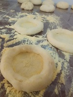
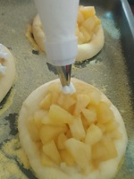
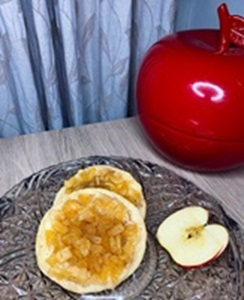
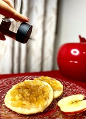

Experimente nossas deliciosas esfirras feitas com maçã fresca e ingredientes de alta qualidade.
Unindo o melhor da culinária árabe tradicional com o carinho genuinamente brasileiro, garantimos que cada esfirra na Madab seja servida com o máximo de qualidade e dedicação, tornando cada momento à mesa uma verdadeira celebração para nossos clientes.
Para mais informações e atualizações sobre a Madab, siga-nos no Instagram:

Temos como objetivo produzir esfihas de maçã únicas e deliciosas, utilizando matérias-primas de alta qualidade. Proporcionando uma experiência única. Poder oferecer esfirras artesanais de maçã elaboradas com ingredientes orgânicos na qual se destaca pela qualidade superior e pelo compromisso com práticas sustentáveis. Embalagens sustentáveis são cruciais para empresas que se preocupam com o meio ambiente. Com isso é incluso o uso de materiais biodegradáveis para embalar esfihas, como papel Kraft.
*Farinha de trigo
*Margarina
*Açúcar
*Sal
*Leite
*Água
*Óleo
*Fermento biológico seco
*Creme de confeiteiro: Leite condensado, gema de ovo, leite integral, amido de milho e essência de baunilha.
*Compota de maçã: maçã fuji, açúcar, água , canela em pau e limão.
*Merengue: clara de ovo e açúcar.
*Finalização com chocolate branco.
Tem perguntas? Gostaria de mais informações? Entre em contato conosco:
MADAB - Esfirras Doces de Maçã
Fundada em 23 de fevereiro de 2024 por um grupo de alunos da Fatec de Assis-SP, a Madab é fruto de um trabalho acadêmico do 5º semestre, conhecido como o desafio do doce com esfirra. Especializada na fabricação de esfirras abertas doces, nosso produto estrela é a irresistível combinação de creme de confeiteiro com compota de maçã, oferecendo uma experiência gastronômica única.
O nome da empresa foi definido pelas inicias do nome de todos os alunos envolvidose estabelecido como Madab. Na Madab, proporcionamos mais do que uma simples refeição, oferecemos uma experiência gastronômica única. Nossas esfirras doces de maçã são verdadeiros destaques, com uma massa leve e saborosa, cuidadosamente preparada com ingredientes selecionados e de alta qualidade. Cada esfirra é elaborada por uma equipe de alunos dedicados e caprichosos. Unindo o melhor da culinária árabe tradicional com o carinho genuinamente brasileiro, garantimos que cada esfirra na Madab seja servida com o máximo de qualidade e dedicação, tornando cada momento à mesa uma verdadeira celebração para nossos clientes.
Fornecer produtos de alta qualidade e proporcionar aos clientes uma experiência culinária única e inesquecível. Nosso compromisso é a excelência em sabor, atendimento e satisfação do cliente.
Ser a melhor na produção de esfirras de maçã em Assis e região. Queremos que cada mordida seja uma celebração de sabor.
*Qualidade: Temos o compromisso de utilizar apenas os melhores ingredientes para confeccionar nossas esfirras.
*Inovação: Procuramos constantemente formas de melhorar e inovar, seja nas nossas receitas, nos nossos serviços ou na nossa presença na comunidade.
*Respeito: Valorizamos cada cliente, funcionário e parceiro de negócios e tratamos a todos com o máximo respeito.
*Sustentabilidade: Nós nos esforçamos para fazer escolhas comerciais que beneficiem nossos clientes, nossas comunidades e nosso planeta.
Michele Ap. Pedro Faustino
20 anos
Tarumã - SP
Adriel Antônio dos Santos
27 anos
Cândido Mota - SP
Douglas Felipe Zimemann
33 anos
Assis - Sp
Ana Paula Amorim da Silva
38 anos
Assis - SP
Beatriz Hespanhol de Oliveira
26 anos
Palmital - SP